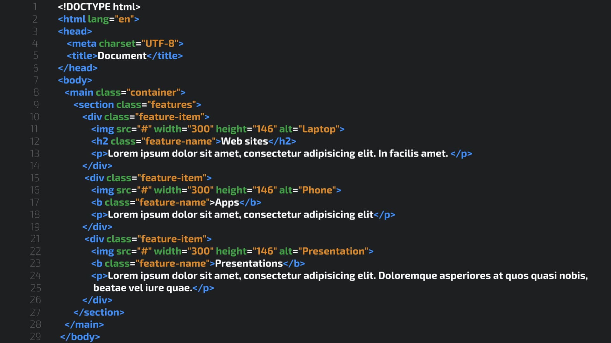

Prova de HTML
O HTML é o código usado para se estrutrar uma página web e o conteúdo contido nela, ela é uma linguagem de marcação, não de programação, então, ela apenas estrutura essa página web, ela não o programa, diferente da maioria das linguagens usada na programação, é o HTML, junto com o CSS, que criam o visual em que as linguagens de programação trabalharão em cima, dentro do conteúdo de web. O HTML pode, de certa forma, se comparar com um editor de texto, tipo o word, onde você organiza textos, parágrafos, títulos, adiciona imagens, etc., para o melhor e mais apresentável resultado, porém numa escala ampliada e que visa além da funcionalidade, o visual e a estética geral do produto,. Sua linguagem é caracterizada por elementos que usam tags, que são os comandos que designam o tipo de conteúdo que vai ter dentro dela, além de terem nomes sugestivos, que facilitam a compreensão da funcionalidade de cada tag usada dentro do código HTML, dentro das tags, tem o conteúdo, como texto, imagens, gifs, vídeos, etc. Essas 3 informações juntas é o que forma um elemento dentro do HTML. Junto disso, há a estilização da página, onde usamos comandos da linguagem de CSS para adicionar cores, alinhamento e personalizamos no geral a página web, a diferenciando dos demais sites, permitindo a confecção de uma página web usando a linguagem de marcação, montando o visual para que você possa programar dentro da página com outras linguagens, como o javascript, por exemplo, montando assim uma página web completa e com todas as suas funcionalidades funcionando. Abaixo está um exemplo de um código HTML:
 Página do currículo